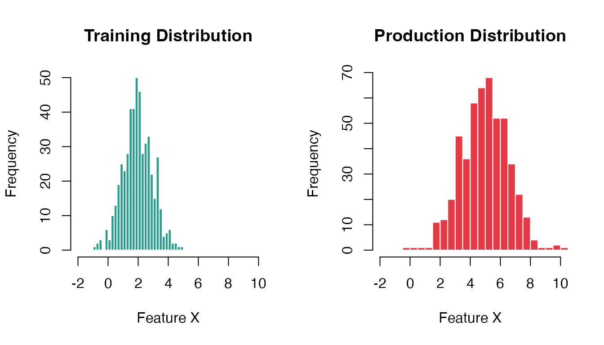
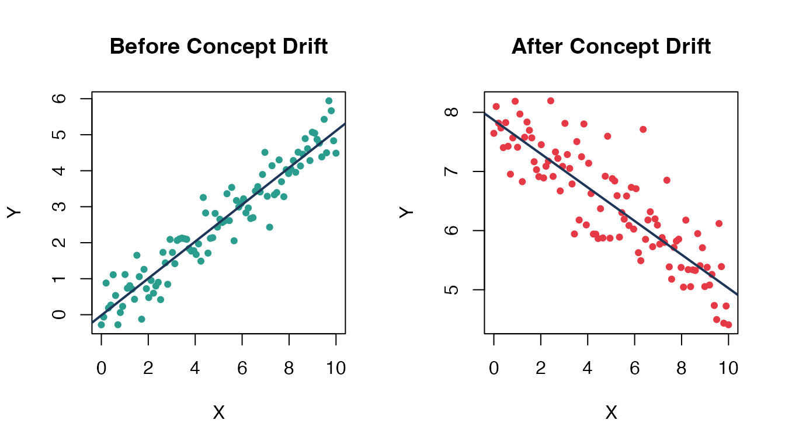
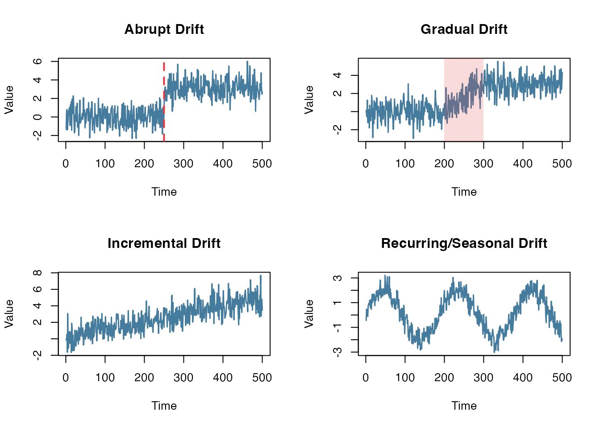
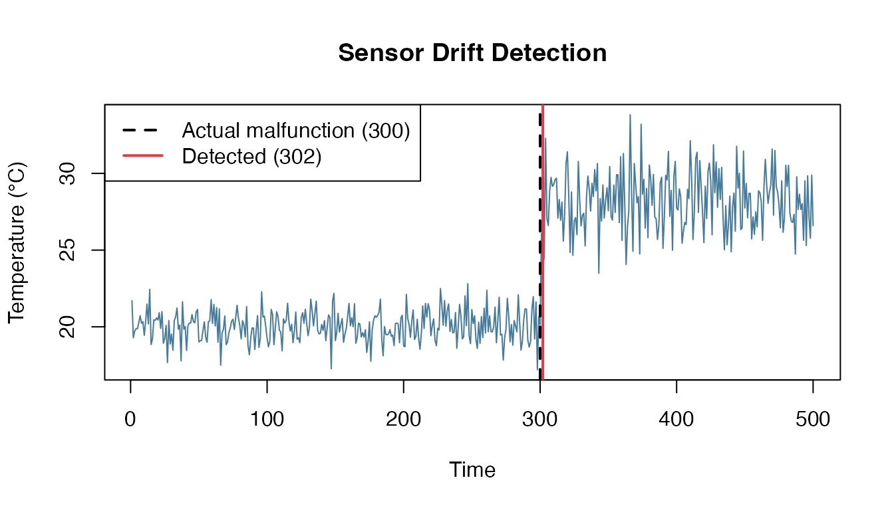
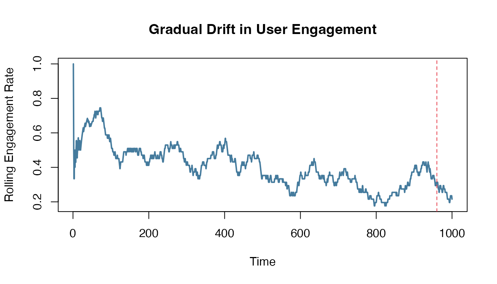
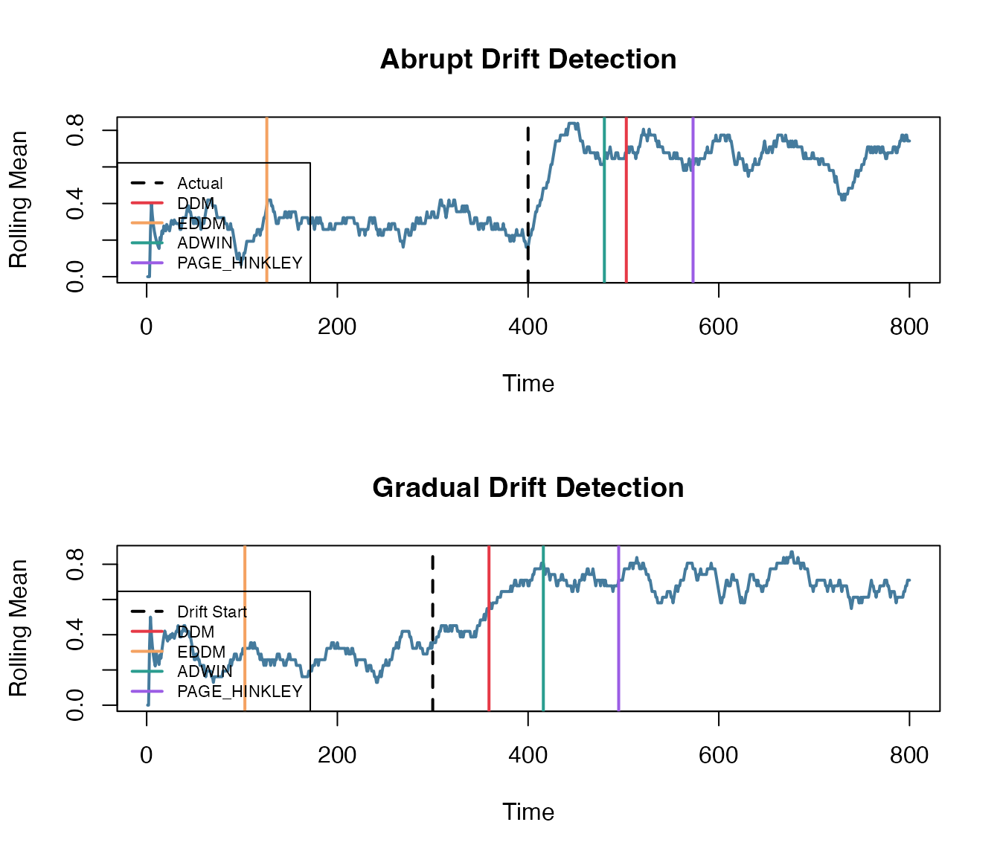
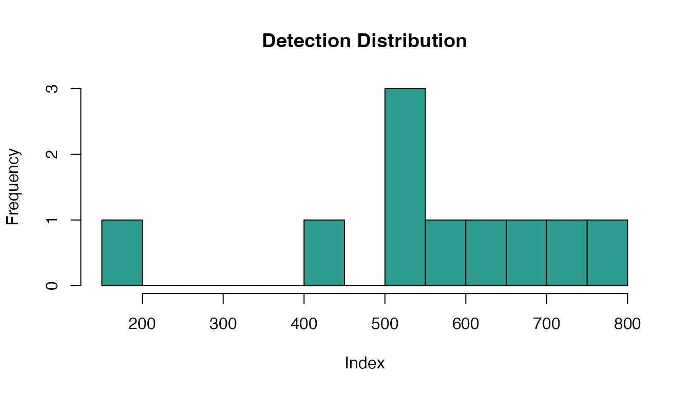

Comprehensive Guide to Drift Detection with datadriftR
Source:vignettes/datadriftR-intro.Rmd
datadriftR-intro.RmdIntroduction
Machine learning models are trained on historical data with the assumption that future data will follow similar patterns. However, in real-world applications, data evolves over time. When the statistical properties of data change, model performance can silently degrade—leading to incorrect predictions, financial losses, or even safety risks.
datadriftR provides a comprehensive toolkit for detecting these changes in streaming data, enabling proactive model maintenance and reliable production ML systems.
Understanding Drift: A Conceptual Framework
What is Dataset Shift?
Dataset shift is the umbrella term for any scenario where the joint distribution of inputs and outputs differs between training and deployment:
\[P_{train}(X, Y) \neq P_{test}(X, Y)\]
This shift can manifest in several distinct forms, each requiring different detection strategies.
Types of Drift
1. Covariate Shift (Data Drift / Virtual Drift)
The input distribution changes while the relationship between inputs and outputs remains the same:
\[P_{train}(X) \neq P_{test}(X) \quad \text{but} \quad P(Y|X) \text{ unchanged}\]
Real-world examples:
- E-commerce: Customer demographics shift from urban millennials to suburban families
- Healthcare: Hospital starts serving older patient population
- Finance: Economic recession changes spending patterns
set.seed(42)
par(mfrow = c(1, 2))
# Training data
x_train <- rnorm(500, mean = 2, sd = 1)
hist(x_train, breaks = 30, col = "#2A9D8F", border = "white",
main = "Training Distribution", xlab = "Feature X", xlim = c(-2, 10))
# Test data (shifted)
x_test <- rnorm(500, mean = 5, sd = 1.5)
hist(x_test, breaks = 30, col = "#E63946", border = "white",
main = "Production Distribution", xlab = "Feature X", xlim = c(-2, 10))
Covariate Shift: Input distribution changes
2. Concept Drift (Real Drift)
The relationship between inputs and outputs changes:
\[P_{train}(Y|X) \neq P_{test}(Y|X)\]
Real-world examples:
- Spam detection: Spammers adapt strategies to evade filters
- Fraud detection: Criminals develop new fraud techniques
- Recommendation systems: User preferences evolve (e.g., pandemic changes movie preferences)
set.seed(123)
par(mfrow = c(1, 2))
# Before concept drift
x <- seq(0, 10, length.out = 100)
y_before <- 0.5 * x + rnorm(100, sd = 0.5)
plot(x, y_before, pch = 19, col = "#2A9D8F", cex = 0.7,
main = "Before Concept Drift", xlab = "X", ylab = "Y")
abline(lm(y_before ~ x), col = "#1D3557", lwd = 2)
# After concept drift (relationship changed)
y_after <- -0.3 * x + 8 + rnorm(100, sd = 0.5)
plot(x, y_after, pch = 19, col = "#E63946", cex = 0.7,
main = "After Concept Drift", xlab = "X", ylab = "Y")
abline(lm(y_after ~ x), col = "#1D3557", lwd = 2)
Concept Drift: Decision boundary shifts
3. Prior Probability Shift (Label Drift)
The class distribution changes:
\[P_{train}(Y) \neq P_{test}(Y)\]
Real-world examples:
- Manufacturing: Defect rate increases due to equipment wear
- Medical diagnosis: Disease prevalence changes seasonally
- Churn prediction: Economic downturn increases churn rates
Drift Patterns Over Time
Drift doesn’t always happen abruptly. Understanding the temporal pattern helps choose the right detector:
set.seed(456)
n <- 500
t <- 1:n
par(mfrow = c(2, 2))
# 1. Abrupt drift
abrupt <- c(rnorm(250, 0, 1), rnorm(250, 3, 1))
plot(t, abrupt, type = "l", col = "#457B9D", lwd = 1.5,
main = "Abrupt Drift", xlab = "Time", ylab = "Value")
abline(v = 250, col = "#E63946", lty = 2, lwd = 2)
# 2. Gradual drift
gradual <- sapply(t, function(i) {
p <- min(1, max(0, (i - 200) / 100))
rnorm(1, mean = p * 3, sd = 1)
})
plot(t, gradual, type = "l", col = "#457B9D", lwd = 1.5,
main = "Gradual Drift", xlab = "Time", ylab = "Value")
rect(200, -5, 300, 8, col = rgb(0.9, 0.3, 0.3, 0.2), border = NA)
# 3. Incremental drift
incremental <- rnorm(n, mean = t/100, sd = 1)
plot(t, incremental, type = "l", col = "#457B9D", lwd = 1.5,
main = "Incremental Drift", xlab = "Time", ylab = "Value")
# 4. Recurring drift (seasonal)
recurring <- sin(t / 30) * 2 + rnorm(n, 0, 0.5)
plot(t, recurring, type = "l", col = "#457B9D", lwd = 1.5,
main = "Recurring/Seasonal Drift", xlab = "Time", ylab = "Value")
Different drift patterns over time
Why Drift Detection Matters
| Consequence | Description | Impact |
|---|---|---|
| Silent failures | Model degrades without alerts | Wrong decisions accumulate |
| Delayed response | By the time accuracy drops, damage is done | Revenue loss, safety risks |
| Wasted resources | Unnecessary retraining when no drift | Computational costs |
| Regulatory issues | Models must be explainable and monitored | Compliance failures |
datadriftR: Your Drift Detection Toolkit
Available Methods
datadriftR provides 9 complementary drift detection methods, each suited for different scenarios:
Error-Rate Based Methods (Supervised)
These methods monitor prediction errors and detect when error patterns change:
| Method | Description | Best For |
|---|---|---|
| DDM | Drift Detection Method | Fast detection of abrupt changes |
| EDDM | Early DDM | Gradual drift, earlier warnings |
| HDDM-A | Hoeffding with averaging | Theoretical guarantees |
| HDDM-W | Hoeffding with weighting | Memory efficient |
Distribution-Based Methods (Unsupervised)
These methods compare data distributions directly:
| Method | Description | Best For |
|---|---|---|
| KSWIN | Kolmogorov-Smirnov Windowing | Any numeric data, robust |
| ADWIN | Adaptive Windowing | Automatic window sizing |
| Page-Hinkley | Cumulative sum test | Mean shift detection |
| KL-Divergence | Information-theoretic | Histogram comparison |
Model-Based Methods
| Method | Description | Best For |
|---|---|---|
| ProfileDifference | PDP comparison | Model behavior changes |
How to Choose a Method?
Do you have ground truth labels?
├── YES → Use error-rate methods (DDM, EDDM, HDDM)
│ ├── Need fast detection? → DDM
│ ├── Gradual drift? → EDDM
│ └── Need guarantees? → HDDM-A/W
│
└── NO → Use distribution methods
├── Continuous data? → KSWIN, Page-Hinkley, ADWIN
├── Categorical? → KL-Divergence
└── Model behavior? → ProfileDifferenceQuick Start: Basic Usage
The detect_drift() Function
The simplest way to detect drift—process an entire stream at once:
The simplest way to detect drift - process entire stream at once:
library(datadriftR)
set.seed(123)
n_stable <- 500
n_drift <- 500
stream <- c(
sample(c(0, 1), n_stable, replace = TRUE, prob = c(0.7, 0.3)),
sample(c(0, 1), n_drift, replace = TRUE, prob = c(0.3, 0.7))
)
drift_point <- n_stable + 1
results <- detect_drift(stream, method = "ddm", include_warnings = FALSE)
head(results, 3)
#> index value type
#> 1 560 1 driftAll Methods Comparison
methods <- c("ddm", "eddm", "hddm_a", "hddm_w", "kswin", "adwin", "page_hinkley")
comparison <- do.call(rbind, lapply(methods, function(m) {
res <- detect_drift(stream, method = m, include_warnings = FALSE)
data.frame(
Method = toupper(m),
Detections = nrow(res),
First = if (nrow(res) > 0) min(res$index) else NA
)
}))
comparison
#> Method Detections First
#> 1 DDM 1 560
#> 2 EDDM 3 403
#> 3 HDDM_A 1 517
#> 4 HDDM_W 1 511
#> 5 KSWIN 2 516
#> 6 ADWIN 1 608
#> 7 PAGE_HINKLEY 1 693
roll_mean <- sapply(seq_along(stream), function(i) mean(stream[max(1,i-50):i]))
plot(roll_mean, type = "l", col = "gray40", lwd = 2,
xlab = "Observation", ylab = "Rolling Mean",
main = "Drift Detection Comparison")
abline(v = drift_point, col = "black", lty = 2, lwd = 2)
colors <- c("#E63946", "#F4A261", "#2A9D8F", "#9B5DE5", "#00BBF9", "#8B4513", "#FF69B4")
for (i in seq_len(nrow(comparison))) {
if (!is.na(comparison$First[i])) {
abline(v = comparison$First[i], col = colors[i], lwd = 2)
}
}
legend("bottomleft",
legend = c(paste0("Actual (", drift_point, ")"),
paste0(comparison$Method, " (", comparison$First, ")")),
col = c("black", colors),
lty = c(2, rep(1, 6)), lwd = 2, cex = 0.8, bg = "white")
Detection points by method
Online Learning: Streaming with For Loop
For real-time applications, process observations one by one:
ddm <- DDM$new()
for (i in seq_along(stream)) {
ddm$add_element(stream[i])
if (ddm$change_detected) {
cat("DDM detected drift at index:", i, "\n")
ddm$reset()
}
}
#> DDM detected drift at index: 560
kswin <- KSWIN$new(alpha = 0.005, window_size = 100)
for (i in seq_along(stream)) {
kswin$add_element(stream[i])
if (kswin$detected_change()) {
cat("KSWIN detected drift at index:", i, "\n")
}
}
#> KSWIN detected drift at index: 518
#> KSWIN detected drift at index: 719
#> KSWIN detected drift at index: 855
ph <- PageHinkley$new(threshold = 50)
for (i in seq_along(stream)) {
ph$add_element(stream[i])
if (ph$detected_change()) {
cat("Page-Hinkley detected drift at index:", i, "\n")
ph$reset()
}
}
#> Page-Hinkley detected drift at index: 693Continuous Data Example
set.seed(111)
n_before <- 200
n_after <- 200
before <- rnorm(n_before, mean = 0, sd = 1)
after <- rnorm(n_after, mean = 0, sd = 3)
cont_stream <- c(before, after)
cont_drift <- n_before + 1
results_cont <- detect_drift(cont_stream, method = "kswin",
alpha = 0.001, window_size = 50, stat_size = 25)
plot(cont_stream, type = "l", col = "gray50",
xlab = "Observation", ylab = "Value", main = "Variance Change Detection")
abline(v = cont_drift, col = "black", lty = 2, lwd = 2)
if (nrow(results_cont) > 0) {
abline(v = results_cont$index[1], col = "red", lwd = 2)
legend("topleft",
c(paste0("Actual (", cont_drift, ")"),
paste0("Detected (", results_cont$index[1], ")")),
col = c("black", "red"), lty = c(2, 1), lwd = 2)
}
Variance change detection in continuous data
Summary
| Approach | Function | Use Case |
|---|---|---|
| Batch | detect_drift() |
Analyze complete dataset |
| Online |
DDM$new(), KSWIN$new(), etc. |
Real-time streaming |
For more details: ?detect_drift, ?DDM,
?KSWIN, ?PageHinkley
Real-World Scenarios
Scenario 1: Monitoring Model Errors (Classification)
You have a deployed classification model and want to detect when it starts making more errors:
set.seed(789)
# Simulate prediction errors: 0 = correct, 1 = error
# Model works well initially (5% error), then degrades (25% error)
errors <- c(
rbinom(400, 1, prob = 0.05), # Good performance
rbinom(600, 1, prob = 0.25) # Degraded performance
)
# Detect when model starts failing
drift_results <- detect_drift(errors, method = "ddm", include_warnings = TRUE)
print(drift_results)
#> index value type
#> 1 44 1 drift
#> 2 83 1 drift
#> 3 122 1 drift
#> 4 161 1 warning
#> 5 162 0 warning
#> 6 163 0 warning
#> 7 164 0 warning
#> 8 165 0 warning
#> 9 279 1 warning
#> 10 280 0 warning
#> 11 281 0 warning
#> 12 282 0 warning
#> 13 283 0 warning
#> 14 284 0 warning
#> 15 285 0 warning
#> 16 286 0 warning
#> 17 287 0 warning
#> 18 292 1 warning
#> 19 293 0 warning
#> 20 294 0 warning
#> 21 295 0 warning
#> 22 296 0 warning
#> 23 297 1 drift
#> 24 347 1 drift
#> 25 387 1 warning
#> 26 390 1 warning
#> 27 391 0 warning
#> 28 392 0 warning
#> 29 393 0 warning
#> 30 394 0 warning
#> 31 407 1 warning
#> 32 408 1 warning
#> 33 409 0 warning
#> 34 410 1 warning
#> 35 411 0 warning
#> 36 412 1 warning
#> 37 413 0 warning
#> 38 414 0 warning
#> 39 415 1 drift
#> 40 458 1 warning
#> 41 606 1 warning
#> 42 610 1 warning
#> 43 613 1 warning
#> 44 614 1 warning
#> 45 615 0 warning
#> 46 616 0 warning
#> 47 617 0 warning
#> 48 620 1 warning
#> 49 621 0 warning
#> 50 628 1 warning
#> 51 632 1 warning
#> 52 633 1 warning
#> 53 634 0 warning
#> 54 635 0 warning
#> 55 637 1 warning
#> 56 638 0 warning
#> 57 639 0 warning
#> 58 640 1 warning
#> 59 641 0 warning
#> 60 642 1 warning
#> 61 643 1 warning
#> 62 644 1 warning
#> 63 645 0 warning
#> 64 646 0 warning
#> 65 647 1 warning
#> 66 648 0 warning
#> 67 649 1 warning
#> 68 650 0 warning
#> 69 651 0 warning
#> 70 652 0 warning
#> 71 653 0 warning
#> 72 654 0 warning
#> 73 655 0 warning
#> 74 656 0 warning
#> 75 657 1 warning
#> 76 658 0 warning
#> 77 659 0 warning
#> 78 660 1 warning
#> 79 661 0 warning
#> 80 662 0 warning
#> 81 663 0 warning
#> 82 664 0 warning
#> 83 665 0 warning
#> 84 666 0 warning
#> 85 667 0 warning
#> 86 668 0 warning
#> 87 676 1 warning
#> 88 679 1 warning
#> 89 681 1 warning
#> 90 682 0 warning
#> 91 683 1 warning
#> 92 684 0 warning
#> 93 685 1 warning
#> 94 686 0 warning
#> 95 687 0 warning
#> 96 688 0 warning
#> 97 689 0 warning
#> 98 690 0 warning
#> 99 691 1 warning
#> 100 692 0 warning
#> 101 693 1 warning
#> 102 694 1 warning
#> 103 695 0 warning
#> 104 696 0 warning
#> 105 697 0 warning
#> 106 698 0 warning
#> 107 699 0 warning
#> 108 700 1 warning
#> 109 701 0 warning
#> 110 702 0 warning
#> 111 703 1 warning
#> 112 704 0 warning
#> 113 705 0 warning
#> 114 706 0 warning
#> 115 707 0 warning
#> 116 708 0 warning
#> 117 711 1 warning
#> 118 712 0 warning
#> 119 715 1 warning
#> 120 716 0 warning
#> 121 718 1 warning
#> 122 719 1 warning
#> 123 720 0 warning
#> 124 721 0 warning
#> 125 722 0 warning
#> 126 723 0 warning
#> 127 791 1 warning
#> 128 792 0 warning
#> 129 897 1 warning
#> 130 898 1 warning
#> 131 899 1 warning
#> 132 900 0 warning
#> 133 901 0 warning
#> 134 902 0 warning
#> 135 903 0 warning
#> 136 904 1 warning
#> 137 905 0 warning
#> 138 906 0 warning
#> 139 907 0 warning
#> 140 908 1 warning
#> 141 909 1 warning
#> 142 910 0 warning
#> 143 911 0 warning
#> 144 912 0 warning
#> 145 913 0 warning
#> 146 914 0 warning
#> 147 915 0 warning
#> 148 919 1 warning
#> 149 920 1 warning
#> 150 921 0 warning
#> 151 922 0 warning
#> 152 924 1 warning
#> 153 925 0 warning
#> 154 926 0 warning
#> 155 929 1 warningScenario 2: Sensor Data Monitoring (IoT)
A temperature sensor should maintain consistent readings, but equipment failure causes a shift:
set.seed(321)
# Normal operation: 20°C with some noise
normal_readings <- rnorm(300, mean = 20, sd = 1)
# Equipment malfunction: readings drift upward
faulty_readings <- rnorm(200, mean = 28, sd = 2)
sensor_stream <- c(normal_readings, faulty_readings)
# Use Page-Hinkley for continuous data
ph <- PageHinkley$new(threshold = 20, delta = 0.01)
drift_points <- c()
for (i in seq_along(sensor_stream)) {
ph$add_element(sensor_stream[i])
if (ph$detected_change()) {
drift_points <- c(drift_points, i)
ph$reset()
}
}
# Visualize
plot(sensor_stream, type = "l", col = "#457B9D",
xlab = "Time", ylab = "Temperature (°C)",
main = "Sensor Drift Detection")
abline(v = 300, col = "black", lty = 2, lwd = 2)
if (length(drift_points) > 0) {
abline(v = drift_points[1], col = "#E63946", lwd = 2)
legend("topleft", c("Actual malfunction (300)", paste0("Detected (", drift_points[1], ")")),
col = c("black", "#E63946"), lty = c(2, 1), lwd = 2)
}
Sensor drift detection
Scenario 3: Gradual Drift Detection
Some drift happens slowly—like user behavior changing over months:
set.seed(555)
# Gradual shift in user engagement
n <- 1000
engagement <- numeric(n)
for (i in 1:n) {
# Engagement slowly decreases over time
base_rate <- 0.6 - (i / n) * 0.4 # From 60% to 20%
engagement[i] <- rbinom(1, 1, prob = base_rate)
}
# ADWIN adapts its window to detect gradual changes
adwin <- ADWIN$new(delta = 0.001)
drift_points <- c()
for (i in seq_along(engagement)) {
adwin$add_element(engagement[i])
if (adwin$detected_change()) {
drift_points <- c(drift_points, i)
}
}
cat("ADWIN detected gradual drift at indices:", drift_points, "\n")
#> ADWIN detected gradual drift at indices: 960
# Visualize with rolling average
roll_avg <- sapply(seq_along(engagement), function(i) mean(engagement[max(1,i-50):i]))
plot(roll_avg, type = "l", col = "#457B9D", lwd = 2,
xlab = "Time", ylab = "Rolling Engagement Rate",
main = "Gradual Drift in User Engagement")
if (length(drift_points) > 0) {
abline(v = drift_points, col = "#E63946", lty = 2)
}
Detecting gradual drift with ADWIN
Deep Dive: Each Method Explained
DDM (Drift Detection Method)
How it works: Monitors error rate and standard deviation. Drift is signaled when: \[p_i + s_i \geq p_{min} + 3 \cdot s_{min}\]
Where \(p_i\) is error rate and \(s_i\) is standard deviation at observation \(i\).
ddm <- DDM$new(
min_num_instances = 30, # Minimum observations before checking
warning_level = 2.0, # Standard deviations for warning
out_control_level = 3.0 # Standard deviations for drift
)
# Process stream
for (i in seq_along(stream)) {
ddm$add_element(stream[i])
if (ddm$warning_detected && !ddm$change_detected) {
cat("DDM WARNING at index:", i, "\n")
}
if (ddm$change_detected) {
cat("DDM DRIFT at index:", i, "\n")
ddm$reset()
}
}
#> DDM WARNING at index: 514
#> DDM WARNING at index: 516
#> DDM WARNING at index: 517
#> DDM WARNING at index: 518
#> DDM WARNING at index: 519
#> DDM WARNING at index: 520
#> DDM WARNING at index: 521
#> DDM WARNING at index: 522
#> DDM WARNING at index: 523
#> DDM WARNING at index: 524
#> DDM WARNING at index: 525
#> DDM WARNING at index: 526
#> DDM WARNING at index: 527
#> DDM WARNING at index: 528
#> DDM WARNING at index: 529
#> DDM WARNING at index: 530
#> DDM WARNING at index: 531
#> DDM WARNING at index: 532
#> DDM WARNING at index: 533
#> DDM WARNING at index: 534
#> DDM WARNING at index: 535
#> DDM WARNING at index: 536
#> DDM WARNING at index: 537
#> DDM WARNING at index: 538
#> DDM WARNING at index: 539
#> DDM WARNING at index: 540
#> DDM WARNING at index: 541
#> DDM WARNING at index: 542
#> DDM WARNING at index: 543
#> DDM WARNING at index: 544
#> DDM WARNING at index: 545
#> DDM WARNING at index: 546
#> DDM WARNING at index: 547
#> DDM WARNING at index: 548
#> DDM WARNING at index: 549
#> DDM WARNING at index: 550
#> DDM WARNING at index: 551
#> DDM WARNING at index: 552
#> DDM WARNING at index: 553
#> DDM WARNING at index: 554
#> DDM WARNING at index: 555
#> DDM WARNING at index: 556
#> DDM WARNING at index: 557
#> DDM WARNING at index: 558
#> DDM WARNING at index: 559
#> DDM DRIFT at index: 560
#> DDM WARNING at index: 700
#> DDM WARNING at index: 703
#> DDM WARNING at index: 706
#> DDM WARNING at index: 707
#> DDM WARNING at index: 708
#> DDM WARNING at index: 709
#> DDM WARNING at index: 710
#> DDM WARNING at index: 711
#> DDM WARNING at index: 712
#> DDM WARNING at index: 713
#> DDM WARNING at index: 714
#> DDM WARNING at index: 715
#> DDM WARNING at index: 716
#> DDM WARNING at index: 717
#> DDM WARNING at index: 718
#> DDM WARNING at index: 719
#> DDM WARNING at index: 720
#> DDM WARNING at index: 721
#> DDM WARNING at index: 722
#> DDM WARNING at index: 723
#> DDM WARNING at index: 724
#> DDM WARNING at index: 725
#> DDM WARNING at index: 726
#> DDM WARNING at index: 727
#> DDM WARNING at index: 728
#> DDM WARNING at index: 730
#> DDM WARNING at index: 731
#> DDM WARNING at index: 733
#> DDM WARNING at index: 736
#> DDM WARNING at index: 745
#> DDM WARNING at index: 746
#> DDM WARNING at index: 748
#> DDM WARNING at index: 749
#> DDM WARNING at index: 751
#> DDM WARNING at index: 752
#> DDM WARNING at index: 753
#> DDM WARNING at index: 754
#> DDM WARNING at index: 755
#> DDM WARNING at index: 756
#> DDM WARNING at index: 757
#> DDM WARNING at index: 758
#> DDM WARNING at index: 759
#> DDM WARNING at index: 760
#> DDM WARNING at index: 761
#> DDM WARNING at index: 762
#> DDM WARNING at index: 763
#> DDM WARNING at index: 764
#> DDM WARNING at index: 765
#> DDM WARNING at index: 766
#> DDM WARNING at index: 767
#> DDM WARNING at index: 768
#> DDM WARNING at index: 769
#> DDM WARNING at index: 770
#> DDM WARNING at index: 771
#> DDM WARNING at index: 772
#> DDM WARNING at index: 773
#> DDM WARNING at index: 774
#> DDM WARNING at index: 775
#> DDM WARNING at index: 776
#> DDM WARNING at index: 777
#> DDM WARNING at index: 778
#> DDM WARNING at index: 779
#> DDM WARNING at index: 780
#> DDM WARNING at index: 781
#> DDM WARNING at index: 782
#> DDM WARNING at index: 783
#> DDM WARNING at index: 784
#> DDM WARNING at index: 785
#> DDM WARNING at index: 786
#> DDM WARNING at index: 787
#> DDM WARNING at index: 788
#> DDM WARNING at index: 789
#> DDM WARNING at index: 790
#> DDM WARNING at index: 791
#> DDM WARNING at index: 792
#> DDM WARNING at index: 793
#> DDM WARNING at index: 794
#> DDM WARNING at index: 795
#> DDM WARNING at index: 796
#> DDM WARNING at index: 797
#> DDM WARNING at index: 798
#> DDM WARNING at index: 799
#> DDM WARNING at index: 800
#> DDM WARNING at index: 801
#> DDM WARNING at index: 802
#> DDM WARNING at index: 803
#> DDM WARNING at index: 804
#> DDM WARNING at index: 805
#> DDM WARNING at index: 806
#> DDM WARNING at index: 807
#> DDM WARNING at index: 808
#> DDM WARNING at index: 809
#> DDM WARNING at index: 810
#> DDM WARNING at index: 811
#> DDM WARNING at index: 812
#> DDM WARNING at index: 813
#> DDM WARNING at index: 814
#> DDM WARNING at index: 815
#> DDM WARNING at index: 816
#> DDM WARNING at index: 817
#> DDM WARNING at index: 818
#> DDM WARNING at index: 819
#> DDM WARNING at index: 820
#> DDM WARNING at index: 821
#> DDM WARNING at index: 822
#> DDM WARNING at index: 823
#> DDM WARNING at index: 824
#> DDM WARNING at index: 825
#> DDM WARNING at index: 826
#> DDM WARNING at index: 827
#> DDM WARNING at index: 828
#> DDM WARNING at index: 829
#> DDM WARNING at index: 830
#> DDM WARNING at index: 831
#> DDM WARNING at index: 832
#> DDM WARNING at index: 833
#> DDM WARNING at index: 834
#> DDM WARNING at index: 835
#> DDM WARNING at index: 836
#> DDM WARNING at index: 837
#> DDM WARNING at index: 838
#> DDM WARNING at index: 839
#> DDM WARNING at index: 840
#> DDM WARNING at index: 841
#> DDM WARNING at index: 842
#> DDM WARNING at index: 843
#> DDM WARNING at index: 844
#> DDM WARNING at index: 845
#> DDM WARNING at index: 846
#> DDM WARNING at index: 847
#> DDM WARNING at index: 848
#> DDM WARNING at index: 849
#> DDM WARNING at index: 850
#> DDM WARNING at index: 851
#> DDM WARNING at index: 852
#> DDM WARNING at index: 853
#> DDM WARNING at index: 854
#> DDM WARNING at index: 855
#> DDM WARNING at index: 856
#> DDM WARNING at index: 857
#> DDM WARNING at index: 858
#> DDM WARNING at index: 859
#> DDM WARNING at index: 860
#> DDM WARNING at index: 861
#> DDM WARNING at index: 862
#> DDM WARNING at index: 863
#> DDM WARNING at index: 864
#> DDM WARNING at index: 865
#> DDM WARNING at index: 866
#> DDM WARNING at index: 867
#> DDM WARNING at index: 868
#> DDM WARNING at index: 869
#> DDM WARNING at index: 870
#> DDM WARNING at index: 871
#> DDM WARNING at index: 872
#> DDM WARNING at index: 873
#> DDM WARNING at index: 874
#> DDM WARNING at index: 875
#> DDM WARNING at index: 876
#> DDM WARNING at index: 877
#> DDM WARNING at index: 878
#> DDM WARNING at index: 879
#> DDM WARNING at index: 880
#> DDM WARNING at index: 881
#> DDM WARNING at index: 882
#> DDM WARNING at index: 883
#> DDM WARNING at index: 884
#> DDM WARNING at index: 885
#> DDM WARNING at index: 886
#> DDM WARNING at index: 887
#> DDM WARNING at index: 888
#> DDM WARNING at index: 889
#> DDM WARNING at index: 890
#> DDM WARNING at index: 891
#> DDM WARNING at index: 892
#> DDM WARNING at index: 893
#> DDM WARNING at index: 894
#> DDM WARNING at index: 895
#> DDM WARNING at index: 896
#> DDM WARNING at index: 897
#> DDM WARNING at index: 898
#> DDM WARNING at index: 899
#> DDM WARNING at index: 900
#> DDM WARNING at index: 901
#> DDM WARNING at index: 902
#> DDM WARNING at index: 903
#> DDM WARNING at index: 904
#> DDM WARNING at index: 905
#> DDM WARNING at index: 906
#> DDM WARNING at index: 907
#> DDM WARNING at index: 908
#> DDM WARNING at index: 909
#> DDM WARNING at index: 910
#> DDM WARNING at index: 911
#> DDM WARNING at index: 912
#> DDM WARNING at index: 913
#> DDM WARNING at index: 914
#> DDM WARNING at index: 915
#> DDM WARNING at index: 916
#> DDM WARNING at index: 917
#> DDM WARNING at index: 918
#> DDM WARNING at index: 919
#> DDM WARNING at index: 920
#> DDM WARNING at index: 921
#> DDM WARNING at index: 922
#> DDM WARNING at index: 923
#> DDM WARNING at index: 924
#> DDM WARNING at index: 925
#> DDM WARNING at index: 926
#> DDM WARNING at index: 927
#> DDM WARNING at index: 928
#> DDM WARNING at index: 929
#> DDM WARNING at index: 930
#> DDM WARNING at index: 931
#> DDM WARNING at index: 932
#> DDM WARNING at index: 933
#> DDM WARNING at index: 934
#> DDM WARNING at index: 935
#> DDM WARNING at index: 936
#> DDM WARNING at index: 937
#> DDM WARNING at index: 938
#> DDM WARNING at index: 939
#> DDM WARNING at index: 940
#> DDM WARNING at index: 941
#> DDM WARNING at index: 942
#> DDM WARNING at index: 943
#> DDM WARNING at index: 944
#> DDM WARNING at index: 945
#> DDM WARNING at index: 946
#> DDM WARNING at index: 947
#> DDM WARNING at index: 948
#> DDM WARNING at index: 949
#> DDM WARNING at index: 950
#> DDM WARNING at index: 951
#> DDM WARNING at index: 952
#> DDM WARNING at index: 953
#> DDM WARNING at index: 954
#> DDM WARNING at index: 955
#> DDM WARNING at index: 956
#> DDM WARNING at index: 957
#> DDM WARNING at index: 958
#> DDM WARNING at index: 959
#> DDM WARNING at index: 960
#> DDM WARNING at index: 961
#> DDM WARNING at index: 962
#> DDM WARNING at index: 963
#> DDM WARNING at index: 964
#> DDM WARNING at index: 965
#> DDM WARNING at index: 966
#> DDM WARNING at index: 967
#> DDM WARNING at index: 968
#> DDM WARNING at index: 969
#> DDM WARNING at index: 970
#> DDM WARNING at index: 971
#> DDM WARNING at index: 972
#> DDM WARNING at index: 973
#> DDM WARNING at index: 974
#> DDM WARNING at index: 975
#> DDM WARNING at index: 976
#> DDM WARNING at index: 977
#> DDM WARNING at index: 978
#> DDM WARNING at index: 979
#> DDM WARNING at index: 980
#> DDM WARNING at index: 981
#> DDM WARNING at index: 982
#> DDM WARNING at index: 983
#> DDM WARNING at index: 984
#> DDM WARNING at index: 985
#> DDM WARNING at index: 986
#> DDM WARNING at index: 987
#> DDM WARNING at index: 988
#> DDM WARNING at index: 989
#> DDM WARNING at index: 990
#> DDM WARNING at index: 991
#> DDM WARNING at index: 992
#> DDM WARNING at index: 993
#> DDM WARNING at index: 994
#> DDM WARNING at index: 995
#> DDM WARNING at index: 996
#> DDM WARNING at index: 997
#> DDM WARNING at index: 998
#> DDM WARNING at index: 999
#> DDM WARNING at index: 1000ADWIN (Adaptive Windowing)
How it works: Maintains a variable-size window and automatically shrinks it when drift is detected. Uses Hoeffding bounds to determine if two sub-windows have significantly different means.
Key advantage: No need to specify window size—it adapts automatically!
adwin <- ADWIN$new(
delta = 0.002, # Confidence parameter (smaller = more sensitive)
clock = 32, # Check frequency
max_buckets = 5, # Memory parameter
min_window_length = 5, # Minimum window
grace_period = 10 # Initial warm-up
)
drift_indices <- c()
for (i in seq_along(stream)) {
adwin$add_element(stream[i])
if (adwin$detected_change()) {
drift_indices <- c(drift_indices, i)
}
}
cat("ADWIN detected drift at:", drift_indices, "\n")
#> ADWIN detected drift at: 608KSWIN (Kolmogorov-Smirnov Windowing)
How it works: Compares the distribution of a sliding window against a reference window using the two-sample Kolmogorov-Smirnov test.
kswin <- KSWIN$new(
alpha = 0.005, # Significance level
window_size = 100, # Reference window size
stat_size = 30 # Sliding window size
)
for (i in seq_along(stream)) {
kswin$add_element(stream[i])
if (kswin$detected_change()) {
cat("KSWIN detected drift at index:", i, "\n")
}
}
#> KSWIN detected drift at index: 515
#> KSWIN detected drift at index: 646
#> KSWIN detected drift at index: 719
#> KSWIN detected drift at index: 973Page-Hinkley Test
How it works: Monitors cumulative sum of differences from the mean. Detects when the cumulative deviation exceeds a threshold.
\[PH_t = \sum_{i=1}^{t}(x_i - \bar{x}_t - \delta)\]
Drift is signaled when: \(PH_t - \min(PH) > \lambda\)
ph <- PageHinkley$new(
delta = 0.005, # Minimum change magnitude to detect
threshold = 50, # Detection threshold (lambda)
alpha = 0.9999 # Forgetting factor for mean
)
for (i in seq_along(stream)) {
ph$add_element(stream[i])
if (ph$detected_change()) {
cat("Page-Hinkley detected drift at index:", i, "\n")
ph$reset()
}
}
#> Page-Hinkley detected drift at index: 645Method Comparison on Different Drift Types
Abrupt vs. Gradual Drift
set.seed(999)
# Create two streams
n <- 800
# Abrupt drift
abrupt_stream <- c(
rbinom(400, 1, 0.3),
rbinom(400, 1, 0.7)
)
# Gradual drift
gradual_stream <- sapply(1:n, function(i) {
p <- 0.3 + (i > 300) * min(0.4, (i - 300) / 250)
rbinom(1, 1, p)
})
methods <- c("ddm", "eddm", "adwin", "page_hinkley")
results_abrupt <- lapply(methods, function(m) {
res <- detect_drift(abrupt_stream, method = m, include_warnings = FALSE)
if (nrow(res) > 0) min(res$index) else NA
})
results_gradual <- lapply(methods, function(m) {
res <- detect_drift(gradual_stream, method = m, include_warnings = FALSE)
if (nrow(res) > 0) min(res$index) else NA
})
comparison_df <- data.frame(
Method = toupper(methods),
Abrupt_First = unlist(results_abrupt),
Gradual_First = unlist(results_gradual)
)
print(comparison_df)
#> Method Abrupt_First Gradual_First
#> 1 DDM 503 359
#> 2 EDDM 126 103
#> 3 ADWIN 480 416
#> 4 PAGE_HINKLEY 573 495
# Visualization
par(mfrow = c(2, 1))
roll_abrupt <- sapply(seq_along(abrupt_stream), function(i) mean(abrupt_stream[max(1,i-30):i]))
plot(roll_abrupt, type = "l", col = "#457B9D", lwd = 2,
main = "Abrupt Drift Detection", xlab = "Time", ylab = "Rolling Mean")
abline(v = 400, col = "black", lty = 2, lwd = 2)
colors <- c("#E63946", "#F4A261", "#2A9D8F", "#9B5DE5")
for (i in seq_along(methods)) {
if (!is.na(comparison_df$Abrupt_First[i])) {
abline(v = comparison_df$Abrupt_First[i], col = colors[i], lwd = 2)
}
}
legend("bottomleft", c("Actual", comparison_df$Method),
col = c("black", colors), lty = c(2, rep(1, 4)), lwd = 2, cex = 0.7)
roll_gradual <- sapply(seq_along(gradual_stream), function(i) mean(gradual_stream[max(1,i-30):i]))
plot(roll_gradual, type = "l", col = "#457B9D", lwd = 2,
main = "Gradual Drift Detection", xlab = "Time", ylab = "Rolling Mean")
abline(v = 300, col = "black", lty = 2, lwd = 2)
for (i in seq_along(methods)) {
if (!is.na(comparison_df$Gradual_First[i])) {
abline(v = comparison_df$Gradual_First[i], col = colors[i], lwd = 2)
}
}
legend("bottomleft", c("Drift Start", comparison_df$Method),
col = c("black", colors), lty = c(2, rep(1, 4)), lwd = 2, cex = 0.7)
Method performance on different drift types
Best Practices
1. Start with Multiple Detectors
Different methods have different strengths. Run several in parallel:
run_all_detectors <- function(stream) {
methods <- c("ddm", "eddm", "hddm_a", "adwin", "kswin", "page_hinkley")
results <- lapply(methods, function(m) {
res <- detect_drift(stream, method = m, include_warnings = FALSE)
if (nrow(res) > 0) res$index else integer(0)
})
names(results) <- methods
# Consensus: drift confirmed if majority agree
all_detections <- unlist(results)
if (length(all_detections) > 0) {
hist(all_detections, breaks = 20, main = "Detection Distribution",
xlab = "Index", col = "#2A9D8F")
}
return(results)
}
detections <- run_all_detectors(stream)
2. Tune Parameters for Your Domain
# More sensitive detection (more false positives)
sensitive <- detect_drift(stream, method = "ddm",
out_control_level = 2.5)
# Less sensitive (fewer false positives)
conservative <- detect_drift(stream, method = "ddm",
out_control_level = 3.5)
cat("Sensitive detections:", nrow(sensitive), "\n")
#> Sensitive detections: 89
cat("Conservative detections:", nrow(conservative), "\n")
#> Conservative detections: 3713. Monitor Multiple Features
In practice, monitor each important feature independently:
# Simulate multivariate data
set.seed(123)
feature1 <- c(rnorm(300, 0, 1), rnorm(200, 2, 1))
feature2 <- c(rnorm(300, 5, 2), rnorm(200, 5, 2)) # No drift
feature3 <- c(rnorm(400, 10, 1), rnorm(100, 15, 1))
features <- list(feature1 = feature1, feature2 = feature2, feature3 = feature3)
for (name in names(features)) {
result <- detect_drift(features[[name]], method = "kswin",
alpha = 0.01, window_size = 50)
cat(name, ": ", nrow(result), "drift(s) detected\n")
}
#> feature1 : 9 drift(s) detected
#> feature2 : 12 drift(s) detected
#> feature3 : 9 drift(s) detectedSummary Table
| Method | Data Type | Drift Type | Memory | Speed | Use When |
|---|---|---|---|---|---|
| DDM | Binary errors | Abrupt | Low | Fast | Classification monitoring |
| EDDM | Binary errors | Gradual | Low | Fast | Early warning needed |
| HDDM-A | Binary | Both | Medium | Medium | Need guarantees |
| HDDM-W | Binary | Both | Low | Fast | Memory constrained |
| ADWIN | Numeric | Both | Adaptive | Medium | Unknown drift type |
| KSWIN | Numeric | Abrupt | Fixed | Medium | Distribution changes |
| Page-Hinkley | Continuous | Abrupt | Low | Fast | Mean shift |
| KL-Divergence | Categorical | Any | Fixed | Medium | Histogram data |
| ProfileDiff | Model PDPs | Any | High | Slow | Model behavior |
Further Resources
- API Reference: See the Reference section for detailed function documentation
- Paper: Dar & Cavus (2025). datadriftR: An R package for data drift detection. Journal of Open Source Software.
- Python alternatives: River, scikit-multiflow
For questions or issues, please visit our GitHub repository.